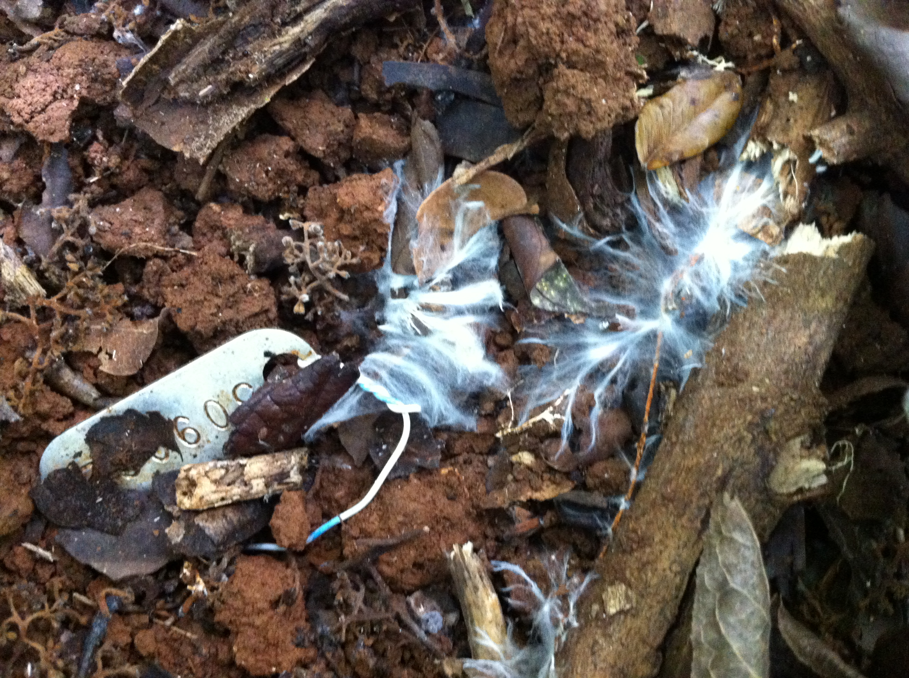
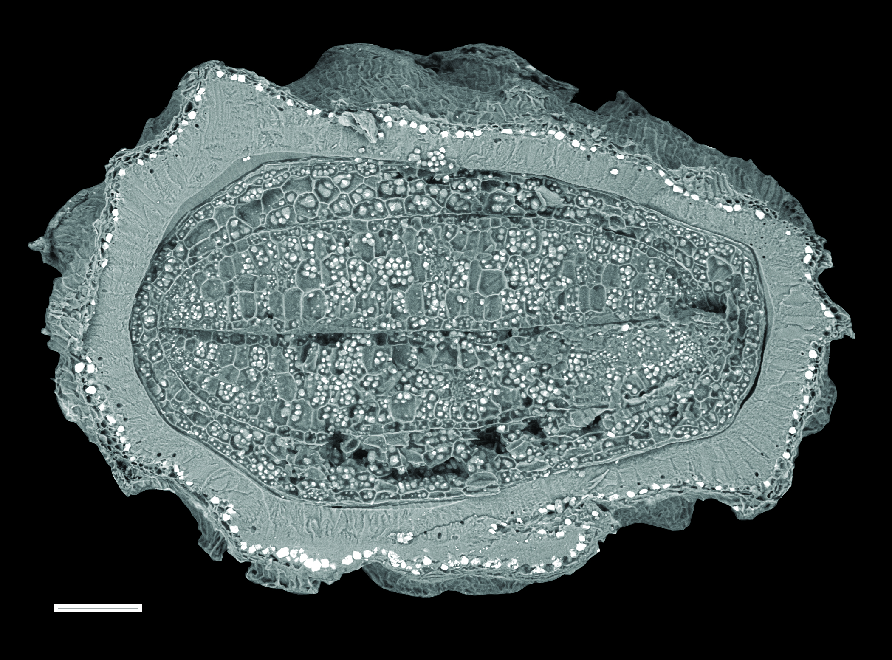
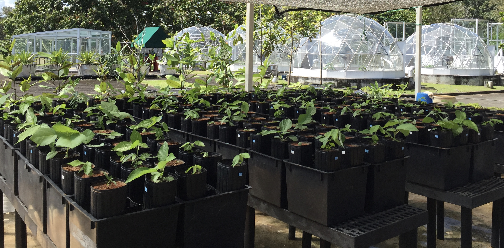

PLANT - SOIL - MICROBIAL INTERACTIONS
Direct plant-soil interactions, and those mediated by soil microbial communities, are critical determinants of tree species performance and distributions. Our work focuses on tropical ecosystems, but our research questions are equally applicable across a range of ecosystem types. Our research focuses among others on the ecology and evolution of symbiotic fungi associated with seeds and roots of tropical trees; quantifying, through experiments, their influence on the processes that maintain tropical forest diversity. We apply the tools of microbial ecology (next-generation sequencing, culturing, and manipulative experiments) and biogeochemistry in the context of plant community ecology. Below, are some of our active projects and ongoing interests.

Soil pathogens are a major source of mortality of seeds and seedlings in tropical forests and are therefore important potential mediators of forest diversity. Nonetheless, little is known about which microorganisms are responsible for this mortality or the host- and microbial traits that determine the dynamics of infection and pathogenesis. Together these unknowns form a critical gap in our understanding, impeding our ability to determine host-specificity of these interactions – a central component of the body of ecological theory that links soil, microbes, and plants in the processes of forest dynamics. We strive to fill this knowledge gap using field and laboratory experiments in which we link variation in physical and chemical defenses of seeds with microbial ecology. In particular, we study the factors that influence seed persistence in the soil, where seeds must persist and survive microbial attack.
We are interested in the functional traits and dynamism of plant-associated microorganisms (with particular interest to fungi), and exploring why the outcomes of plant-microbial interactions can be variable across space and time. Indeed, understanding how fungi colonize plants without causing disease constitutes a central question in fungal ecology and plant biology, and it is likely tied to environmental factors as well as the rich microbial context in which key interactions occur. One area of important focus lies at the interface of pathogenic/nonpathogenic fungi: we know that transitions between asymptomatic versus pathogenic life modes may be highly labile in a phylogenetic context. The functional specificity model (see Sarmiento et al. 2017 PNAS, 114(43): 11458-11463) may account for how virulent pathogens maintain their populations in nature – such that research framed by this model could help us to explain why asymptomatic infections by fungi prevail so dramatically in natural ecosystems. Specifically we would like to address the persistence and dynamics of (a) soil seed banks and (b) endophytes in seedlings and saplings, with attention to the diverse costs and benefits that may be conferred by these plant microbiome components. Using culturing, next-generation sequencing, and manipulative experiments, we ultimately hope to answer how non-pathogenic fungi interact with plant hosts without engaging host defense responses.

Seeds are the most important component of plant reproduction in the context of natural plant communities. We complement our microbial focus with exploration of physical and chemical defenses of seeds. Using tools such as scanning electron microscopy, assays of seed chemistry, measurements of seed fracture resistance and permeability, as well as field experiments, we have gained insight not only into the time course of fungal infection, but its implications for seed survival over time in soil. We have developed a new conceptual framework centering on ‘seed dormancy-defense syndromes’ – that is, we observe that species with similar seed-dormancy traits consistently deter pathogens and/or granivores in similar ways. In addition to providing a new framework for understanding seed ecology and demography in tropical forests, this research has applications for the management and conservation of plants (e.g., control of invasive plants and management of agricultural weeds) in tropical and temperate regions.

We are intended to provide our research program with a toolbox to take novel approaches to fundamental questions in ecology. Plant communities are shaped by climate, soil conditions and plant-microbial interactions, but how plant species partition specific soil resources, and the mechanisms by which they tolerate toxic or deficient concentrations of specific nutrients in the soil, are largely unknown.
Most tropical lowland forests are phosphorus-limited. Phosphorus (P) limitation has strong physiological and ecological effects on vegetation. In Amazonia, wood production is correlated positively with soil fertility, notably total soil P, and in Panamanian forests the majority of tree species grow faster where soil P concentrations are greater. Soil P has also been shown to be important in explaining tree species distributions in lowland forests in Panama, across the neotropics, and the old world. However, the degree to which species partition individual resources, and the impact of plant-microbial interactions on niche partitioning, are largely unknown.
As carbon dynamics and soil chemistry are intimately tied to microbial processes, this area is rich in future research directions. We are using experiments to understand how plant species partition soil resource axes, and the importance of physiological and morphological plasticity in determining their tolerance to resource deficit or toxicity. We anticipate integrating field-, greenhouse-, and laboratory studies that link soil chemistry, plant-mycorrhizal associations, plant ecology, and plant physiology.